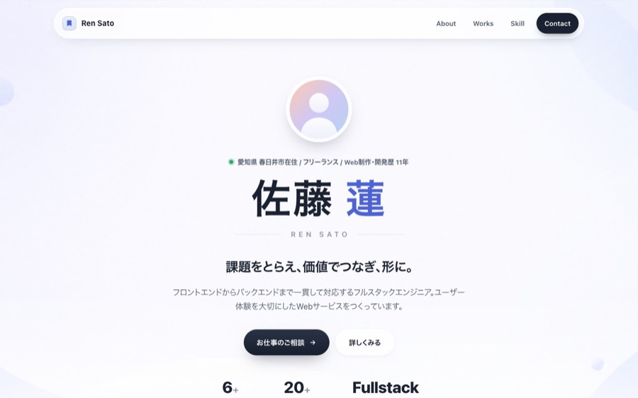
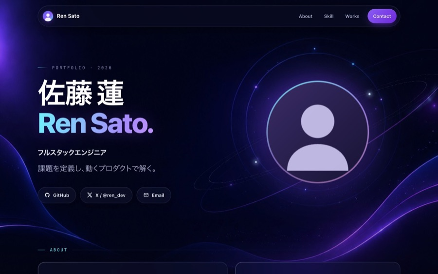
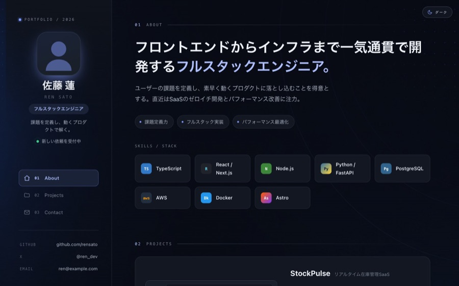
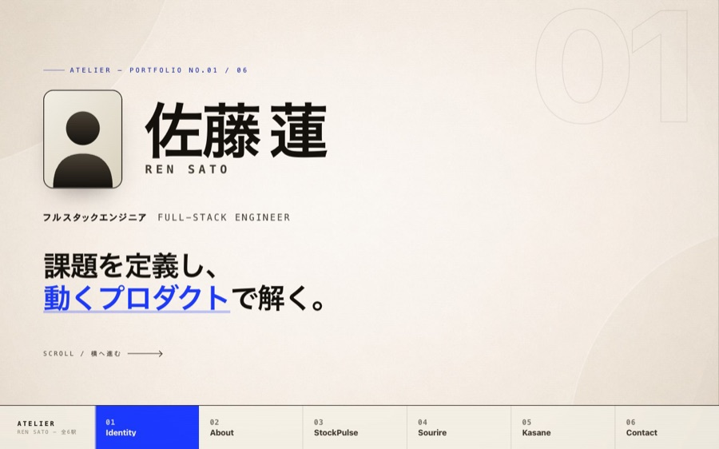

Portfolio Builder · Theme Gallery
各カードのサムネイルで雰囲気を確認し、開いて実物（サンプルデータ）を触ってみてください。選んだテーマに、あなたの実際のプロフィールと制作物が流し込まれます。

白地に淡いオーロラ×すりガラス。清潔で読みやすく、採用担当にも万人向けの既定テーマ。
実物を開く
深いダーク×宇宙グラデーションのガラスモーフィズム。技術的な先進性・プロダクト感を強く。
実物を開く
左固定サイドバー＋右スクロール。ライト/ダーク切替可。情報量・案件数が多い人向け。
実物を開く
全セクションが横一列のパネル。ベージュ紙×ビビッドな青。作品性・こだわりを前面に。
実物を開く